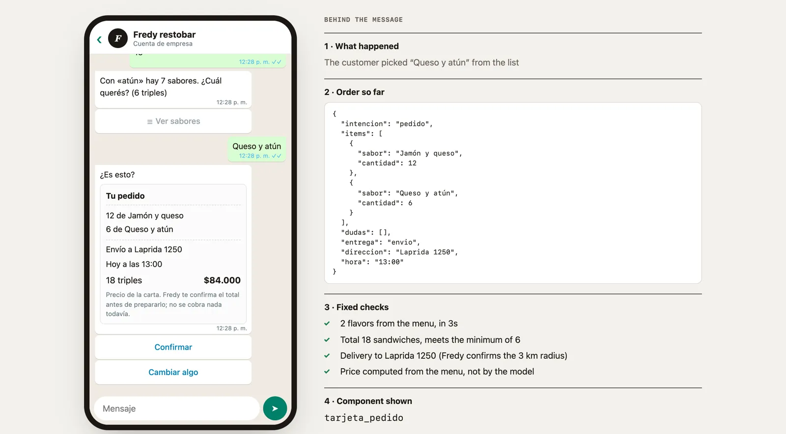

- Prototype · not commissioned
- Conversational AI
- 2026
- Chat in Spanish
Ordering on WhatsApp.
Fredy’s order, inside WhatsApp. The customer types however it comes out and AI builds a card to confirm. What I designed is what the model can compose, what stays fixed, and how it recovers when it gets it wrong.
Try the prototype
What I saw
Fredy’s site works: in its first month, all 5 WhatsApp orders came from the sticky bar on mobile. But the site is a detour. It builds a message the customer could type straight into WhatsApp, and Fredy gets it as loose text he confirms by hand.
The idea
“Just type it.”
Take the order where the conversation already is, in two layers. A fixed one: the WhatsApp form (Flow) with the business rules. A generative one: a model that turns free text into a closed format. The model proposes; the rules and the customer decide. If something goes wrong, the form is always there.
What AI decides
| The model can | The model can’t |
|---|---|
| Understand slang for flavors, “a dozen”, “to Laprida 1250”, “for 1 pm” | Name a flavor that isn’t on the menu |
| Propose flavors, quantities, delivery and time | Compute the price: it comes from the menu |
| Flag a doubt, with its candidates | Pick between candidates: it asks the customer |
| Always return the same format | Confirm the order, or choose what gets shown |
Fixed checks
| Check | If it fails | What shows |
|---|---|---|
| The flavor is on the menu | Dropped: never shown | — |
| Comes in 3s | Rounded up, and it says so | continues |
| Only one flavor matches | A list of candidates, up to 10 | elegir_sabor |
| Meets the minimum of 6 | “The minimum is 6 and you have 3. Add 3 more?” | falta_minimo |
| Delivery or pickup is known | Two buttons | elegir_entrega |
| There’s an address, if delivery | Asked in the chat | pedir_direccion |
| Everything passes | A card with the menu total: Confirm or Change something | tarjeta_pedido |
| It isn’t an order | Opens the form | abrir_flow |
Inside


WhatsApp’s limits
| Limit | How I solved it |
|---|---|
| No + / − stepper | Each flavor is a pair of lists: flavor and quantity. The 37 flavors are searchable and each shows its group and price. |
| Quantities are text: they can’t be added | Everything comes in 3s, so the minimum of 6 is met if the first has more than 3 or there’s a second flavor. That condition enables the button. |
| No server, no growing lists | Picking a flavor opens a slot for another, up to 6. |
| 30-character titles | One flavor name got shortened. |
| No in-WhatsApp payments in Argentina | The card says nothing is charged and Fredy confirms the total in the chat. |
Status
- Form screens
- 3
- Flavors from the menu
- 37
- Errors in Meta’s validator
- 0
- Possible components
- 6
The form is loaded and validated in Meta (Flow JSON 7.3). Sending it to a real phone is waiting on business verification. In the prototype the model is simulated with rules; the format it returns, the checks and the components are the real design. Next: a real model with structured output to the same format.